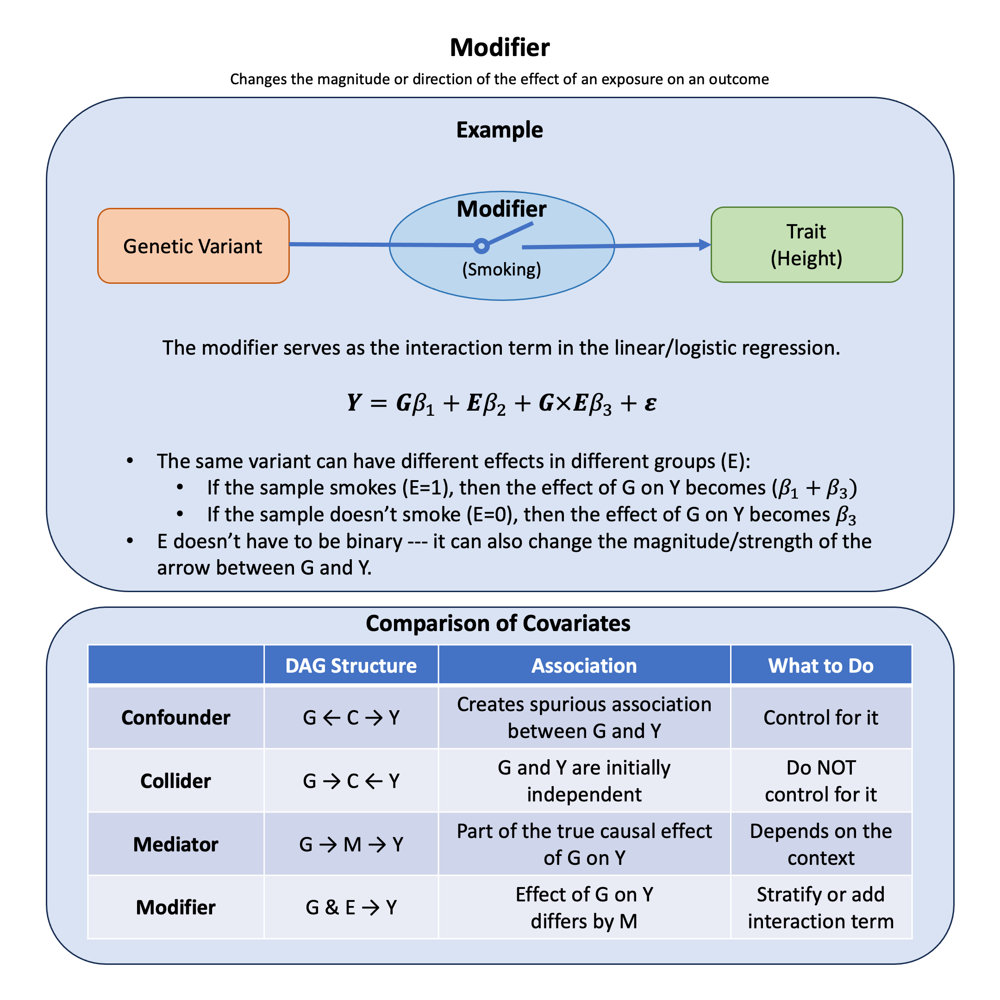

Modifier#
A modifier (also called effect modifier) is a variable that changes the magnitude or direction of the effect of an exposure on an outcome. The relationship between exposure and outcome differs across levels of the modifier.
Graphical Summary#

Key Formula#
Unlike confounders, colliders, and mediators—which can all be represented by simple directed arrows—a modifier changes the strength of an existing arrow. This is represented as an interaction in a regression model:
Where:
\(X\) is the exposure (e.g., genetic variant)
\(Y\) is the outcome (e.g., trait)
\(M\) is the modifier (e.g., an environmental variable)
\(\beta_3\) is the interaction coefficient, capturing how much the effect of \(X\) on \(Y\) changes per unit of \(M\)
The total effect of \(X\) on \(Y\) at a given level of \(M\) is:
When \(M = 0\): the effect of \(X\) is \(\beta_1\). When \(M = 1\): the effect of \(X\) is \(\beta_1 + \beta_3\). If \(\beta_3 \neq 0\), effect modification is present.
Technical Details#
Gene-Environment (G×E) Interaction#
In statistical genetics, effect modification is most commonly encountered as gene-environment (G×E) interaction: a genetic variant’s effect on a trait depends on an environmental exposure (e.g., diet, smoking, medication).
No interaction (\(\beta_{G \times E} = 0\)): the genetic effect is the same regardless of environment
Positive interaction (\(\beta_{G \times E} > 0\)): the genetic effect is amplified in the presence of the environmental factor
Complete interaction (\(\beta_G = 0\), \(\beta_{G \times E} \neq 0\)): the genetic effect exists only in the presence of the modifier
How to Detect Modification#
There are two complementary approaches:
Interaction term: Include \(X \times M\) in the regression model and test whether \(\beta_3 \neq 0\)
Stratified analysis: Run separate regressions within each stratum of \(M\) and compare the estimated effects
Both approaches should give consistent results. The interaction term approach is more powerful (uses all data in one model), while stratification is more interpretable.
Modifier vs. Other Variable Types#
Type |
Causal Structure |
Question |
What to Do |
|---|---|---|---|
Confounder |
\(X \leftarrow W \rightarrow Y\) |
Independently causes both \(X\) and \(Y\)? |
Adjust for it |
Collider |
\(X \rightarrow W \leftarrow Y\) |
Caused by both \(X\) and \(Y\)? |
Never adjust |
Mediator |
\(X \rightarrow W \rightarrow Y\) |
On the causal path from \(X\) to \(Y\)? |
Adjust to isolate direct effect |
Modifier |
\(X \xrightarrow{M} Y\) |
Changes the size of the \(X \rightarrow Y\) effect? |
Stratify or add interaction term |
Important: A variable can play more than one role simultaneously. For example, smoking could be both a confounder (if it affects allele frequencies through population structure) and a modifier (if it changes the genetic effect size). Always consider the full causal structure.
Ignoring a Modifier#
If a true modifier exists but is ignored, the estimated effect of \(X\) will be an average across strata of \(M\). This can:
Dilute the true effect (appear null when a real effect exists in a subgroup)
Produce a misleading overall estimate that is unrepresentative of any subgroup
Miss important biological or clinical insights
Example#
A genetic variant is associated with blood pressure—but only in smokers. Among non-smokers, the variant has no effect. Smoking is the modifier.
If we analyze the full sample without accounting for this interaction, the effect appears diluted or absent. Only by including an interaction term (or stratifying by smoking status) do we recover the true genetic effect.
The causal structure:
Both \(G\) (genetic variant) and \(E\) (smoking) independently affect blood pressure (\(Y\)), and they also interact: the effect of \(G\) on \(Y\) is present only when \(E = 1\).
Setup#
rm(list = ls())
set.seed(42)
N <- 50
# Generate genetic variant (0, 1, 2 copies of risk allele)
G <- sample(0:2, N, replace = TRUE, prob = c(0.25, 0.5, 0.25))
# Generate smoking status (independent of genetics)
smoking <- rbinom(N, 1, 0.4) # 40% smokers
# Blood pressure: the SNP only has an effect in smokers (G x E interaction)
# Among non-smokers: no genetic effect
# Among smokers: each risk allele raises BP by 5 mmHg
BP <- 120 + # Baseline
3 * smoking + # Smoking main effect
0 * G + # No main genetic effect
5 * G * smoking + # Interaction: SNP effect only in smokers
rnorm(N, 0, 5) # Noise
data <- data.frame(BP = BP, G = G, smoking = smoking)
cat("Sample size:", N, "\n")
cat("Non-smokers:", sum(smoking == 0), "| Smokers:", sum(smoking == 1), "\n")
Sample size: 50
Non-smokers: 32 | Smokers: 18
Analysis 1: Ignoring the Modifier#
If we ignore smoking and test for the genetic effect in the full sample, the estimated effect is diluted because it averages over smokers (where the effect exists) and non-smokers (where it does not):
# Model without interaction
model_no_interaction <- lm(BP ~ G + smoking, data = data)
summary_no_interaction <- summary(model_no_interaction)
beta_G <- summary_no_interaction$coefficients["G", "Estimate"]
p_G <- summary_no_interaction$coefficients["G", "Pr(>|t|)"]
cat("=== WITHOUT INTERACTION TERM ===\n")
cat(sprintf("Estimated G effect: beta = %.3f, p = %.4f\n", beta_G, p_G))
cat("Interpretation: Weak and potentially non-significant — effect is diluted\n")
=== WITHOUT INTERACTION TERM ===
Estimated G effect: beta = 1.755, p = 0.0672
Interpretation: Weak and potentially non-significant — effect is diluted
Analysis 2: Including the Interaction Term#
Including the interaction term \(G \times \text{smoking}\) correctly recovers the true structure. The significant interaction coefficient confirms that smoking modifies the genetic effect:
# Model with interaction
model_interaction <- lm(BP ~ G * smoking, data = data)
summary_interaction <- summary(model_interaction)
beta_G_main <- summary_interaction$coefficients["G", "Estimate"]
p_G_main <- summary_interaction$coefficients["G", "Pr(>|t|)"]
beta_GxE <- summary_interaction$coefficients["G:smoking", "Estimate"]
p_GxE <- summary_interaction$coefficients["G:smoking", "Pr(>|t|)"]
cat("=== WITH INTERACTION TERM ===\n")
cat(sprintf("Main effect of G (in non-smokers): beta = %.3f, p = %.4f\n", beta_G_main, p_G_main))
cat(sprintf("G x Smoking interaction: beta = %.3f, p = %.4f\n", beta_GxE, p_GxE))
cat("Interpretation: Significant interaction — smoking modifies the genetic effect\n")
=== WITH INTERACTION TERM ===
Main effect of G (in non-smokers): beta = -0.179, p = 0.8708
G x Smoking interaction: beta = 5.268, p = 0.0054
Interpretation: Significant interaction — smoking modifies the genetic effect
Analysis 3: Stratified Analysis#
Stratifying by smoking status makes the pattern immediately clear. The genetic effect is present only in smokers:
# Stratified analysis
model_nonsmokers <- lm(BP ~ G, data = data[data$smoking == 0, ])
model_smokers <- lm(BP ~ G, data = data[data$smoking == 1, ])
s_ns <- summary(model_nonsmokers)
s_s <- summary(model_smokers)
cat("=== STRATIFIED ANALYSIS ===\n")
cat(sprintf("Non-smokers: beta = %.3f, p = %.4f\n",
s_ns$coefficients["G", "Estimate"],
s_ns$coefficients["G", "Pr(>|t|)"]))
cat(sprintf("Smokers: beta = %.3f, p = %.4f\n",
s_s$coefficients["G", "Estimate"],
s_s$coefficients["G", "Pr(>|t|)"]))
=== STRATIFIED ANALYSIS ===
Non-smokers: beta = -0.179, p = 0.8784
Smokers: beta = 5.089, p = 0.0009
The stratified analysis and the interaction model both reveal the same truth: the genetic variant only affects blood pressure in smokers. Ignoring the modifier produces a diluted, potentially misleading estimate.